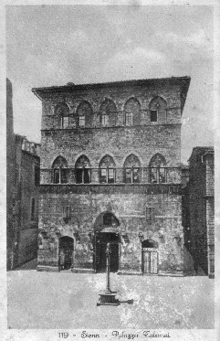

LA STORIA DEL PALAZZO TOLOMEI
Testo tratto da "Il Civettino" del dicembre 2004, articolo di Egidio Mecacci
Non conosciamo la data esatta della sua costruzione, ma si ritiene
che sia avvenuta tra il 1207 ed il 1212.
Fu costruito dai fratelli Jacopo e Tolomeo di Rinaldo Tolomei. Nel
1254 le due quote di comproprietà sono così intestate: quella di
Tolomeo ai cinque figli, Tavena, Jacopo, Lotterengo, Incontrato e
Paganello, a ciascuno dei quali va 1/5 di 1/2; da Jacopo, attraverso
il figlio Baldistricca, va la quota di 1/4 di 1/2 ai quattro nipoti,
Ranuccio, Jacomo, Orlando e Cristoforo.
Ma torniamo al palazzo; se insicura è la data di costruzione, del tutto
sconosciuto è l’architetto, anche perchè di quel primo immobile non
tutto è arrivato fino a noi.
Tenuto conto delle caratteristiche costruttive dei palazzi dell’epoca,
si ritiene che il primo palazzo Tolomei fosse coronato da merlatura,
necessaria alle azioni di offesa e di difesa, di cui tutti i palazzi del
tempo erano forniti.
Nel 1240 il palazzo subì dei danni a causa di un incendio appiccato
dal popolo per divergenze politiche sulla costituzione del governo
della repubblica. La costruzione confinava con la Via dei Termini, la
principale, e con i due vicoli laterali. Solo il 27 aprile del 1246 si ha
notizia dell’apertura di nuove strade, fra cui Banchi di Sopra, nel
retro del palazzo stesso. A seguito di ciò sulla nuova arteria viene
aperto un nuovo ingresso più vasto e la facciata, arricchita in
particolare dell’ornato a bifore.
Nel 1262 di dicembre la corrente ghibellina, guidata da Provenzano
prende il sopravvento, si arriva così senza accorgersene al primo
esodo in massa nel quale 110 famiglie fra le più in vista prendono la
via dell’esilio e si rifugiano a Radicofani: fra queste vi sono anche i
Tolomei.
Nell’estate del 1267 Carlo d’Angiò, in Toscana a fianco delle truppe
fiorentine, pone in un duro assedio Poggibonsi, che di lì a poco è
costretto a capitolare.
Siena si sente direttamente minacciata e teme il peggio.
Violento esplode allora l’odio di parte contro quei senesi che avevano
patrocinato e forse finanziato l’intervento dell’Angiò, ma questi
senesi, esuli, sono al sicuro.
Succede allora che il cieco odio di parte, non potendosi sfogare sulle
persone, si riversa sui palazzi, che vengono devastati e quasi distrutti.
Queste distruzioni non sono frutto di tumulti popolari, ma sono bensì
organizzate a freddo, a tavolino oseremmo dire, dai dirigenti ghibellini,
mossi specialmente dall’odio di Provenzano, che vedeva nei
Tolomei degli scomodi vicini di casa.
Per le demolizioni dei palazzi si incaricò un notaio, certo ser Bussa,
a tener conto delle spese, mentre il disfacimento materiale degli
immobili è affidato a maestri muratori assistiti da un numero impressionante
di manovali.
Siamo, perciò, di fronte ad una demolizione eseguita con tutto
comodo ed in modo razionale.
Le registrazioni dei pagamenti della Camera del Comune a maestro
Lotterio, l’artigiano incaricato di dirigere la demolizione del palazzo
Tolomei, sono diverse e di importo piuttosto considerevole, segno
questo che i lavori durarono a lungo e che furono anche di proporzioni notevoli.
Dal fatto, inoltre, che tutte queste registrazioni, senza eccezione
alcuna, siano riportate nel registro contenente le uscite del semestre
luglio - dicembre 1267 si arguisce che le demolizioni in parola
furono eseguite in tutto quel periodo. La demolizione dell’immobile
dei Tolomei nell’anno 1267 è testimoniata, quindi, dai registri della
Biccherna conservati nell’Archivio di Stato di Siena.
Si pone però una domanda: la demolizione dell’immobile fu totale o
parziale? La risposta ovviamente è difficile, per non dire addirittura
impossibile, ma un’ipotesi ragionevole si può fare.
Il numero degli operai impiegati nella demolizione, il periodo di
tempo occorso (presumibilmente 5/6 mesi) e le somme pagate a
maestro Lotterio sono tutti elementi che ci autorizzano a pensare
ad una demolizione notevole, come ci indica anche il fatto della
asportazione e successiva consegna alla Camera del Comune dei
colonnetti delle bifore e delle relative basi di marmo.
L’intervento
armato di Carlo d’Angiò causa la caduta violenta del governo ghibellino,
avvilito e disfatto nella battaglia di Colle (giugno 1269); la
morte di Provenzano ed il trionfo definitivo del guelfismo toscano
danno il via al rientro di tutti gli esuli.
Fra questi ritornano i Tolomei,
portandosi dietro una gran voglia di rifarsi; li acceca specialmente
l’odio contro Salvani.
Così il passato si ripete: di nuovo case
e torri crollano a terra.
L’abbattimento delle case dei Salvani fu eseguita senza nessuna precauzione,
per cui la caduta provocò anche la rovina di mezza chiesa di
San Cristoforo, che da allora in poi non potrà più essere adibita
a sede di riunioni del Consiglio Generale del Comune. Per questo
motivo, da documenti dell’Archivio di Stato di Siena sappiamo che
subito dopo la ricostruzione del palazzo Tolomei (1270-1272 circa)
il salone del piano terra per un certo tempo divenne il luogo di riunione del Consiglio Generale.

| |